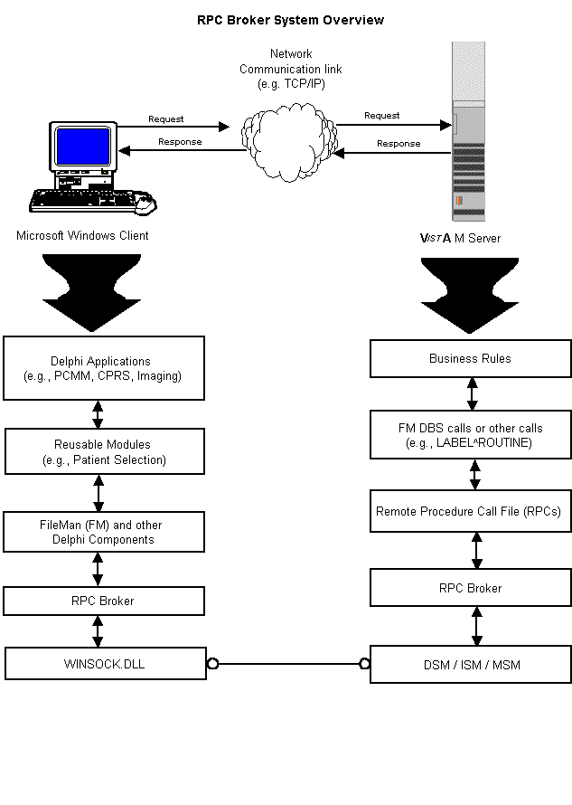

Remote Procedure Call (RPC) Broker
Overview
The RPC Broker establishes a common and consistent
foundation for client/server applications being written under the VISTA umbrella. The RPC Broker acts as a bridge connecting the
client application front-end on the workstation (e.g., Delphi GUI applications) to the
M-based data and business rules on the server. It serves as the communications medium for
messaging between VISTAclient/server
applications. Upon receipt, the message is decoded, the requested remote procedure call is
activated, and the results are returned to the calling application. Therefore, the RPC
Broker can be used to help bridge the gap between the traditionally proprietary VA
software and Commercial-Off-The-Shelf (COTS)/Hybrid Open System Technology (HOST)
products.
The RPC Broker includes:
- A common communications driver interface that handles
the device-specific characteristics of the supported communications protocol.
- An interface component separate from the communications
driver that interprets the message, executes the required code, and eventually returns
data to the communications driver.
- A common file which all applications use to store the
information on the queries to which they respond (i.e., REMOTE PROCEDURE file [#8994]).
Features
- 32-Bit Environment
The Broker operates in a 32-bit Windows environment (i.e., client workstations running
Microsoft Windows 95 or Windows NT operating systems). It also continues to support 16-bit
Broker-based applications.
- Dynamic Link Library (DLL)
The Broker provides a set of DLL functions that allow applications written in any
MS Windows-based development environment (e.g., Borland's Delphi, Microsoft Visual Basic,
and other COTS/HOST products), to take advantage of all the features offered by the Broker
component.
- Broker Developer Kit (BDK)
The TRPCBroker Delphi component provides Delphi developers with an easy, object-based
access to the Broker. When placed on a Delphi form, it allows you to connect to the server
and reference M data.
- Integrated Single Signon
The Broker supports a single signon point from a client workstation to the server.
Users need only sign on once when accessing multiple VISTAapplications
on the same workstation.
- Initial Client/Server Security
Security with the RPC Broker is a three-part process:
- Users must have a valid access and verify code,
- Users must be a valid users of a client/server
application, and
- Remote procedure calls must be registered and valid for
the application being executed.
RPC Broker System Overview
